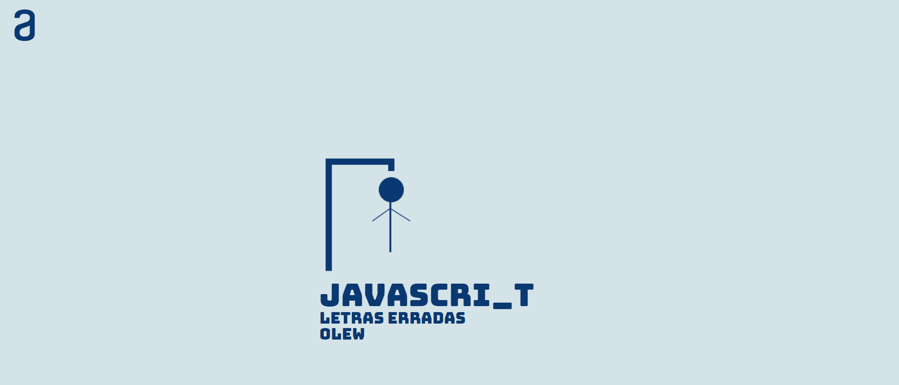

Abner Andrade
Sobre AA.
Meu único objetivo era obter e analisar dados sobre a operação do meu time. Não imaginei que uma simples ocasião fosse capaz de mudar toda minha perspectiva de tal forma.
Bastaram apenas algumas linhas em Java e comandos em SQL para que a sensação de completude tomasse conta de mim. E foi assim que decidi migrar de carreira para trabalhar com o que realmente amo.
Atualmente curso Análise e Desenvolvimento de Sistemas, e comigo carrego a obsessão pelos detalhes, o gosto pelo desafio e o foco em gerar soluções criativas, elegantes e consistentes.
Link.Me
GitHub
LinkedIn
WhatsApp
Projetos
Nazareth

Repositório
Ver Page
Tic-Tac-Toe
Repositório
Ver Page
Pokedex
Repositório
Ver Page
Borrow Me
Repositório
Ver Page
Zombie Dice
Repositório
Ver Page
Personal Page
Repositório
Ver Page